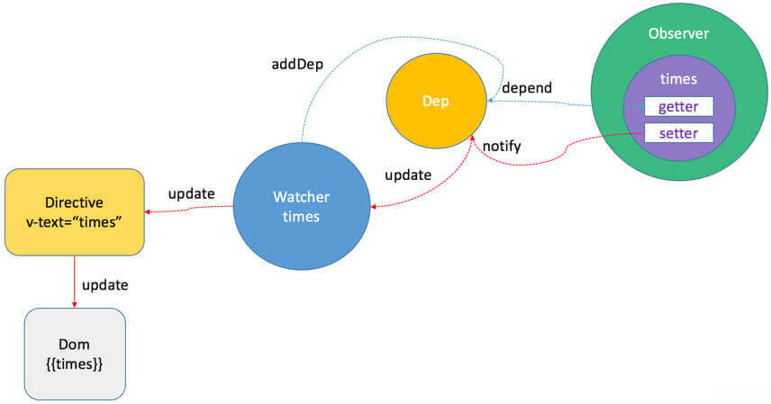

简介
通过响应式对象知道，每一个 data 的属相都会实例化一个 Dep，并且它的 get 函数中通过 dep.depend做依赖收集。通过下面这张图比较直观的看出依赖收集的过程：
defineReactive 的功能就是定义一个响应式对象，给对象动态添加 getter 和 setter，它的定义在 src/core/observer/index.js，在 getter 中会做依赖收集，代码如下：
1 | /** |
getter 的时候进行依赖的收集，注意这里，只有在 Dep.target 中有值的时候才会进行依赖收集，这个 Dep.target 是在Watcher实例的 get 方法调用的时候 pushTarget 会把当前取值的watcher推入 Dep.target，原先的watcher压栈到 targetStack 栈中，当前取值的watcher取值结束后出栈并把原先的watcher值赋给 Dep.target，cleanupDeps 最后把新的 newDeps 里已经没有的watcher清空，以防止视图上已经不需要的无用watcher触发setter 的时候首先 getter，并且比对旧值没有变化则return，如果发生变更，则dep通知所有subs中存放的依赖本数据的Watcher实例 update 进行更新，这里 update 中会 queueWatcher( ) 异步推送到调度者观察者队列 queue 中，在nextTick时 flushSchedulerQueue( ) 把队列中的watcher取出来执行 watcher.run 且执行相关钩子函数。
Dep
Dep 是整个 getter 依赖收集的核心，它的定义在 src/core/observer/dep.js 中：
1 | import type Watcher from "./watcher"; |
Dep.target是一个静态属性，这是一个全局唯一Watcher，这是一个非常巧妙的设计，因为在同一时间只能有一个全局的Watcher被计算。- 定义一些
Dep上得方法，添加依赖方法、移除方法、调用watcher.update()的方法 - 实例属性
subs保存watcher订阅者的列表
watcher
src/core/observer/watcher.js 代码如下:
1 | let uid = 0 |
Watcher是一个观察者对象。依赖收集以后Watcher对象会被保存在Dep的subs中，数据变动的时候Dep会通知Watcher实例，然后由Watcher实例回调cb进行视图的更新。
触发流程
大致流程如下：
- Vue 的
mount过程是通过mountComponent函数
1 | // 初始化渲染 watcher |
- 初始化渲染
watcher的时候，会执行watcher的构造函数，再会执行this.get()方法，进入 get 函数，首先执行：
1 | pushTarget(this); |
实际上就是把 Dep.target 赋值为当前的渲染 watcher 并压栈（为了恢复用）。
- 接着会执行：
1 | // this.getter 对应就是 updateComponent 函数 |
执行
vm._render()这个方法会生成 渲染VNode，并且在这个过程中会对vm上的数据访问，这个时候就触发了数据对象的getter。每个对象属性的getter都持有一个Dep实例，在触发 getter 的时候就会调用dep.depend()方法，也就会执行Dep.target.addDep(this)。执行
Dep.target.addDep(this)这个时候Dep.target已经被赋值为渲染watcher，因为在上面执行了pushTarget(this)。执行 addDep 方法代码如下：
1 | addDep (dep: Dep) { |
这时候会做一些逻辑判断（保证同一数据不会被添加多次）后执行 dep.addSub(this)，那么就会执行 this.subs.push(sub)，也就是说把当前的 watcher 订阅到这个数据持有的 dep 的 subs 中，这个目的是为后续数据变化时候能通知到哪些 subs 做准备。
- 接着执行
watcher中get()方法中的traverse(value)、popTarget()
1 | if (this.deep) { |
执行traverse(value)递归触发子项的getter完成依赖收集。再执行popTarget()实际上就是把 Dep.target 恢复成上一个状态，因为当前 vm 的数据依赖收集已经完成，那么对应的渲染Dep.target 也需要改变。
- 接着执行
watcher中get()方法中的this.cleanupDeps(),cleanupDeps()函数定义在watcher类中。
1 | // cleanupDeps 函数 |
首先理解四个变量depIds、newDepIds 、deps、 newDeps。
depIds Hash表，用于快速查找（dep）newDepIds Hash表，用于快速查找（newDeps）deps缓存上一轮执行观察者函数用到的dep实例newDeps存储本轮执行观察者函数用到的dep实例
在执行 cleanupDeps 函数的时候，会首先遍历 deps，移除对 dep.subs 数组中 Wathcer 的订阅，然后把 newDepIds 和 depIds 交换，newDeps 和 deps 交换，并把 newDepIds 和 newDeps 清空。
为什么清除 Deps
因此Vue设计了在每次添加完新的订阅，会移除掉旧的订阅，这样就保证了在我们刚才的场景中，如果渲染 b 模板的时候去修改 a 模板的数据，a 数据订阅回调已经被移除了，所以不会有任何浪费。
总结
其实在 Vue 中初始化渲染时，视图上绑定的数据就会实例化一个 Watcher，依赖收集就是是通过属性的 getter 函数完成的，Observer 、Watcher 、Dep 都与依赖收集相关。其中 Observer 与 Dep 是一对一的关系， Dep 与 Watcher 是多对多的关系，Dep 则是 Observer 和 Watcher 之间的纽带。